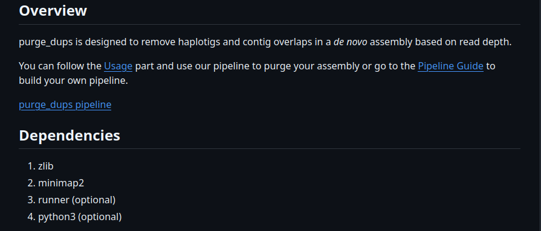

Gente, então minha montagem primária com o HIFIASM, não ficou tão contigua (Menos fragmentada) quando eu gostaria. Então decidi rodar outro software o Purge_Dups, esse software serve pra tirar regiões duplicadas pela montagem por haplotipos (as vezes, o software interpreta regiões iguais nos haplotipos como duas regiões, mas na verdade, se trata da mesma região). O hifiasm tem um propio mecanismo interno para lidar com isso, porém na minha montagem sobrou algumas dessas regiões por isso decidi passar por um software especilizado nisso para resolver esse problema.

Então, meus dados de sequenciamento são PACBIO CCS. Então basicamente tentei começar só seguindo o passo a passo da pagina do purge_dups no github. Porém, a vida não é tão facil assim e enfrentei algumas dificuldades logo de cara, e demorei 2 semanas para conseguir terminar de dar purge nessas regiões do meu genoma. SIM! as vezes precisamos ter fé em Deus e toda vez que eu tentava rodar o minimap2 novamente, eu colocava toda minha esperança!!!!!!!!!!!!! No final, deu tudo certo, até contactei o dev do purge para indiciar um erro no README dele. Então é isso, as vezes precisamos ter fé! Vou discorrer sobre meu erro, caso alguém se encontre numa situação parecida!
Antes de rodar o purge_dups propiamente dito, precisamos alinhar nosso genoma, para gerar arquivos de análise *.paf. Esses arquivos são convertidos em um arquivo chamado PB.stat e precisamos calcular o histograma de profundidade de leitura e a profundidade de leitura no nível da base. Para isso o MiniMap2.
Esse software tirou meu sono… no purge_dups ele coloca essa etapa com um parametro -xasm20, que eu ja estranhei de cara, primeiro porque esse parametro é um parametro de montagem que ja tinha utilizado anteriormente no Hifiasm. Tentei utilizar esse parametro no meu loop umas 4 vezes antes de trocar. Imaginava que talvez, o motivo do minimap2 não estava gerando meus arquivos *.paf por algum outro erro no meu loop (Criei uma lista com dois arquivos de sequenciamento). Demorava uns 4 dias cada tentiva.
Depois de muito tempo, resolvi substituir esse parametro pra um parametro indicado no minimap2, -map-hifi. E enfim, rodou e gerou meus arquivos *.paf.
Depois que eu consegui enfim gerar os arquivos, continuei o processo do purge_dups. Para isso tive que usar o MiniMap2 mais uma vez. Splitei meu arquivo fasta da minha montagem primaria e fiz um self-alignment, agora sim usando o parametro -xasm5, que permite uma certa divergencia entre os alinhamentos ~0,01% , claro que mais que isso o software vai reconhecer o erro, já que eu to alinhando minha montagem com ela mesma.
Depois disso tudo e com os arquivos organizados, até que fim, rodei o purge dups completo, e consegui obter uma contiguidade maior, melhorando a qualidade da minha montagem. A palavra do dia é: Resiliencia. As vezes, vale a pena seguir sua intuição. Perdi um tempinho de trabalho, nada muito preocupante, no final deu tudo certo. Gostei muito do purge_dups e das modelagens que eles usam pra conseguir eliminar essas regiões. Estou esperando a resposta do dev até agora para conversarmos sobre aquele parametro inicial -xasm20 na etapa de mapeamento do nosso genoma.